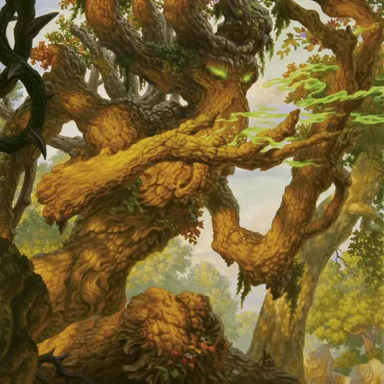

Лесовик
Treefolk
Большое Растение, любое мировоззрение

Класс Доспеха 17 (природный доспех)
Хиты 171 (18к10 + 72)
Скорость 30 футов
| мод | спас | ||
|---|---|---|---|
| СИЛ | 23 | +6 | +6 |
| ЛОВ | 12 | +1 | +1 |
| ТЕЛ | 18 | +4 | +8 |
| мод | спас | ||
|---|---|---|---|
| ИНТ | 10 | +0 | +4 |
| МДР | 20 | +5 | +9 |
| ХАР | 11 | +0 | +0 |
Навыки Восприятие +9, Природа +8, Проницательность +9
Уязвимость к урону огонь
Сопротивление урону дробящий, колющий
Чувства слепое зрение 30 футов, пассивное Восприятие 19
Языки Общий, Друидический, Сильван
Опасность 11 (7200 опыта)
Бонус мастерства +4
Особенности
Растительный камуфляж. Лесовик с преимуществом совершает проверки Ловкости (Скрытность), которые он совершает для того что бы спрятаться в лесной местности.
Древесный путь. Один раз в каждый свой ход лесовик может использовать 10 футов своего перемещения, чтобы магическим образом войти в одно живое дерево в пределах 5 футов от себя и выйти из другого живого дерева в пределах 60 футов от себя, которое он может видеть, появляясь в незанятом пространстве. в пределах 5 футов от второго дерева. Оба дерева должны быть по крайней мере такого же размера, как и лесовик.
Действия
Мультиатака. Лесовик совершает две атаки Сокрушающей лозой, две атаки Снарядом паслёна или по одной каждой из них.
Сокрушающая лоза. . Рукопашная атака оружием: +10 к попаданию, досягаемость 10 фт., одна цель. Попадание: 25 (3к12 + 6) дробящего урона. Если цель — существо, то оно схвачено (Сл высвобождения 18) и пока захват не окончен, оно опутано. Лесовик может схватить до шести существ.
Снаряд паслёна. . Дальнобойная атака заклинанием: +9 к попаданию, дистанция 60 футов, одна цель. Попадание: 33 (6к10) урона ядом.
Использование заклинаний. Лесовик может наложить одно из следующих заклинаний, не требующих материальных компонентов и использующих Мудрость в качестве базовой характеристики для заклинания (Сл спасброска заклинания 17):
• Неограниченно: обнаружение болезней и яда [detect poison and disease], искусство друидов [druidcraft];
• 2/день каждое: увеличение/уменьшение [enlarge/reduce], разговор с растениями [speak with plants];
• 1/день: общение с природой [commune with nature] (действием).
Бонусные действия
Благословление дуба. Лесовик благословляет силой и мудростью леса одно видимое им существо, кроме себя, в пределах 60 футов. Будучи благословленным таким образом, существо может использовать способность лесовика Древесный путь и получает 5 (2к4) временных хитов в начале каждого своего хода. Это благословение длится 1 минуту, пока лесовик не станет недееспособным или он не использует это бонусное действие снова.
Описание
«Сейчас ты слабая палка, но я помогу тебе вырастить несколько колец».
— Борогрове, лесовик Туинваля
Мудрые и древние лесовики процветают в глубинах лесных джунглей Элдраина. Хотя многие лесовики по возрасту соперничают с высшими феями, они редко вмешиваются в дела двора фей. Вместо этого лесные жители служат стражами и пастырями своих диких рощ, даруя мудрость и благословения путешественникам, блуждающим под их ветвями.